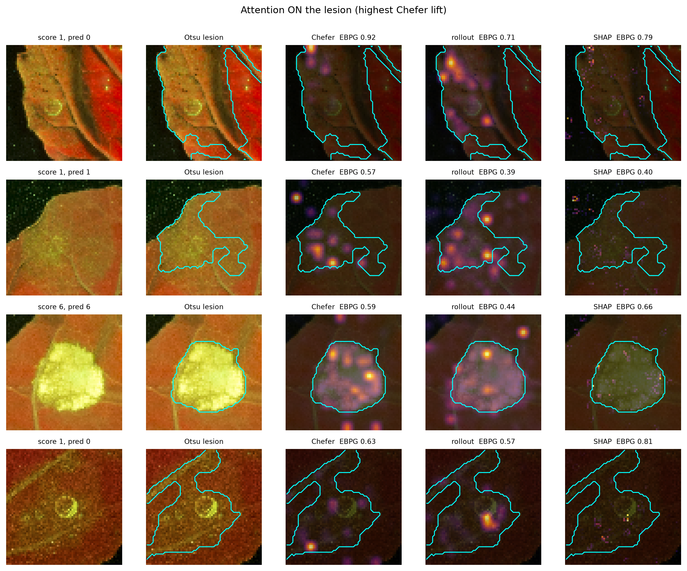
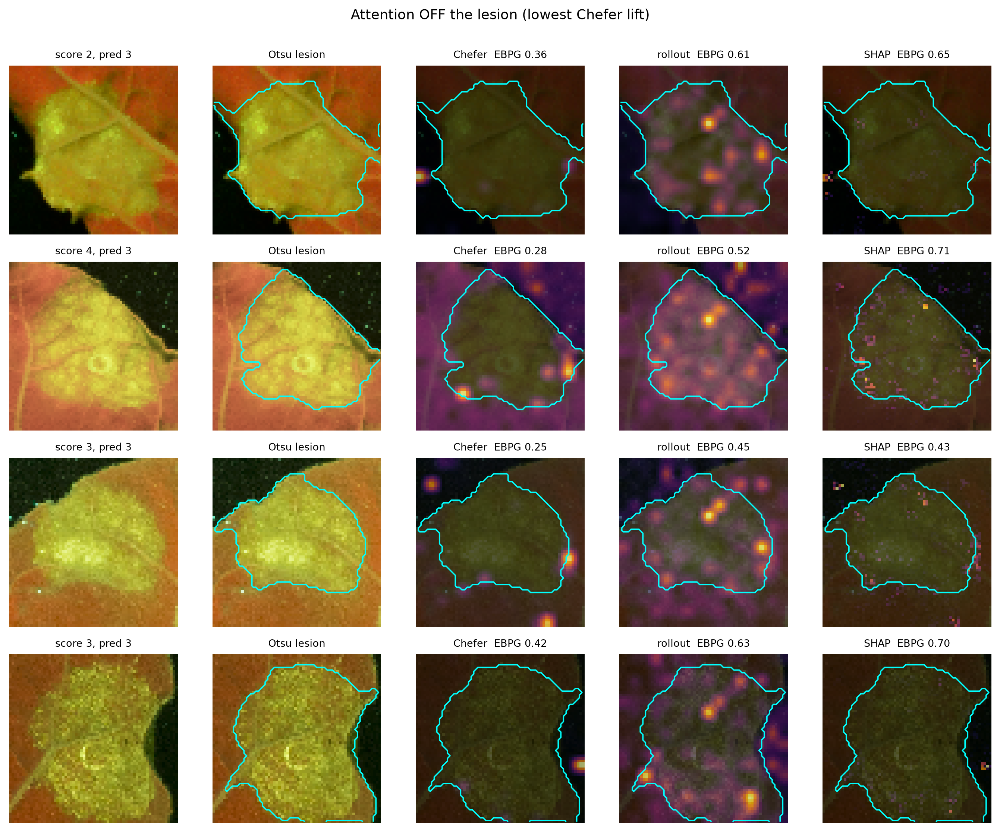
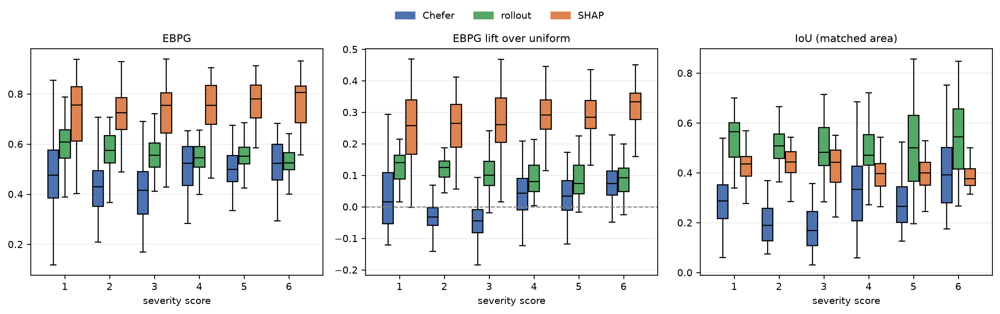

Where does the top ViT look? Chefer relevance, attention rollout and SHAP against the Otsu lesion
Date: 09/09/2026
GOHREP
Goal:
Repeat analyses/06 for the Vision Transformer. Take the top ViT from the Medoid-ViT grid, produce three attribution maps — Chefer relevance, attention rollout and SHAP — and measure how much of each falls inside the Otsu-segmented cell death area, using the identical masks, metrics and null models as the CNN analysis so the two are directly comparable.
Hypotheses:
Attention will sit on the lesion more than the uniform baseline, but not more than a centred Gaussian, exactly as for the CNN. The crop geometry that produced that result is a property of the data, not of the architecture.
The shuffled-mask permutation gap — the part that genuinely tracks this lesion — will be comparable to the CNN’s +0.0218, because both models reach the same accuracy (analyses/07: 0.6466 vs 0.6457 avg_vaf, difference 0.06 SE).
Chefer relevance will localise better than plain attention rollout. Rollout is class-agnostic — it produces the same map whatever class you ask about — so it cannot be measuring evidence for the predicted score.
The ViT will not suffer the CNN’s resolution problem. analyses/06 found Grad-CAM’s pointing game below chance because the last conv layer is 4x4, giving a 16-value map. The ViT’s attention is over a 16x16 patch grid, 16x more spatial detail.
Rationale:
analyses/07 showed the two architectures are indistinguishable on accuracy but agree with each other much less than they agree internally (0.710 cross-class pairwise agreement against 0.779 within CNNs), and that 9 test images are solved by some ViT that no CNN gets right. Equal accuracy with different errors means they are using the image differently, and attribution is the direct way to see how.
Holding the masks, metrics and nulls fixed from analyses/06 is what makes the comparison meaningful. Any difference is then attributable to the model, not to the evaluation.
Method choice, stated plainly. The method here is the ICCV 2021 rule of Chefer, Gur & Wolf (Generic Attention-model Explainability for Interpreting Bi-Modal and Encoder-Decoder Transformers, arXiv:2103.15679), not the CVPR 2021 paper (Transformer Interpretability Beyond Attention Visualization, arXiv:2012.09838). The CVPR method’s Eq 13 is
\[\bar{A}^{(b)} = I + \mathbb{E}_h\left(\nabla A^{(b)} \odot R^{(n_b)}\right)^+\]
where \(R^{(n_b)}\) is a layer-wise relevance propagation score obtained by deep Taylor decomposition. Their reference implementation obtains it by calling model.relprop(...), which requires a ViT in which every layer implements its own relprop — they ship one (ViT_LRP.py). Our model is stock Keras layers with no such method, so the CVPR rule is not available without reimplementing LRP for Conv2D, Dense, LayerNormalization, Add and the attention softmax.
The ICCV rule replaces \(R^{(n_b)}\) with the attention matrix itself. From the authors’ own implementation (Transformer-MM-Explainability, DETR/modules/ExplanationGenerator.py), “rule 5” is cam = (grad * cam).clamp(min=0).mean(dim=0), and rules 6+7 accumulate R = R + cam @ R. That is what is implemented below, and it is cited as the ICCV paper throughout.
Experimental plan:
Load the top ViT, verify it reproduces its recorded test accuracy, and verify the attention-tapping forward pass reproduces the saved model’s predictions.
Compute Chefer relevance, attention rollout and SHAP for every test crop with score >= 1.
Score all three against the same Otsu masks used in analyses/06.
Apply the same two nulls: a centred Gaussian, and the shuffled-mask permutation.
Compare directly against the CNN’s Grad-CAM and SHAP numbers.
1. Setup and validation
1.1 Packages
Code
# 1.1import sysimport warningsfrom pathlib import Pathimport numpy as npimport pandas as pdimport matplotlib.pyplot as pltimport matplotlib.patches as mpatchesfrom PIL import Imagefrom scipy.stats import wilcoxonwarnings.filterwarnings("ignore")repo_root =next(p for p in Path.cwd().parents if (p /".git").exists())sys.path.append(str(repo_root /"src"))import keras # noqa: E402import tensorflow as tf # noqa: E402import shap # noqa: E402import base_dataset # noqa: E402import model_builders # noqa: E402,F401 (registers ClassToken etc. for load_model)HERE = repo_root /"analyses"/"08_vit_attention_vs_lesion"CACHE = HERE /"attr_cache"CACHE.mkdir(exist_ok=True)# The masks are shared with analyses/06: same medoid crops, same test split, same# segmentation. Regenerating them here would risk the two analyses diverging.MASK_DIR = repo_root /"analyses"/"06_cnn_attention_vs_lesion"/"mask_cache"/"masks"plt.rcParams.update({"figure.dpi": 120, "font.size": 9})def to_rgb(img):"""Reverse the channel axis for display only: crops are BGR (cv.imread)."""return img[..., ::-1]
2026-09-10 03:11:18.879441: I tensorflow/core/platform/cpu_feature_guard.cc:210] This TensorFlow binary is optimized to use available CPU instructions in performance-critical operations.
To enable the following instructions: AVX2 FMA, in other operations, rebuild TensorFlow with the appropriate compiler flags.
1.2 The model
Code
# 1.2SEARCH = repo_root /"models"/"04_Medoid_ViT_RandomSearch"/"01_Categorical_Loss"res = pd.read_csv(SEARCH /"random_search_results.csv")BEST_ID =int(res.sort_values("avg_vaf", ascending=False).iloc[0].model_id)MODEL_DIR =next((SEARCH /"results").glob(f"*_{BEST_ID}"))row = res.loc[res.model_id == BEST_ID].iloc[0]model = keras.models.load_model(MODEL_DIR /"model.keras")HP = {k: row[k] for k in ["patch_size", "projection_dim", "num_heads","num_transformer_layers", "mlp_ratio", "activation_function","dropout", "reg", "reg_strength", "opt", "learning_rate"]}N_BLOCKS =int(HP["num_transformer_layers"])PATCH =int(HP["patch_size"])GRID =64// PATCHprint(f"model_id {BEST_ID} ({MODEL_DIR.name}) avg_vaf={row.avg_vaf:.4f} "f"recorded test_acc={row.test_acc:.4f}")print("hyperparameters: "+", ".join(f"{k}={v}"for k, v in HP.items()))print(f"\npatch grid: {GRID}x{GRID} = {GRID*GRID} patches, plus 1 CLS token")
# 1.3ds = base_dataset.load_dataset(str(repo_root /"data/datasets/medoid_64/medoid_64.npy"))X_test = np.asarray(ds["test_images"], dtype="float32")y_test = np.asarray(ds["test_labels"]).astype(int)files_test = np.asarray(ds["test_filepaths"])X_train = np.asarray(ds["train_images"], dtype="float32")preds = np.argmax(model.predict(X_test, verbose=0), axis=1)acc =float((preds == y_test).mean())print(f"recomputed test_acc = {acc:.10f}")print(f"recorded test_acc = {row.test_acc:.10f}")print(f"difference = {abs(acc - row.test_acc):.2e}")assertabs(acc - row.test_acc) <1e-6, "loaded model does not reproduce its recorded accuracy"
WARNING: All log messages before absl::InitializeLog() is called are written to STDERR
I0000 00:00:1789006287.417320 9573935 service.cc:145] XLA service 0x600003b75300 initialized for platform Host (this does not guarantee that XLA will be used). Devices:
I0000 00:00:1789006287.417375 9573935 service.cc:153] StreamExecutor device (0): Host, Default Version
2026-09-10 03:11:27.417764: I tensorflow/core/platform/cpu_feature_guard.cc:210] This TensorFlow binary is optimized to use available CPU instructions in performance-critical operations.
To enable the following instructions: AVX2 FMA, in other operations, rebuild TensorFlow with the appropriate compiler flags.
2026-09-10 03:11:27.486102: I tensorflow/compiler/mlir/tensorflow/utils/dump_mlir_util.cc:268] disabling MLIR crash reproducer, set env var `MLIR_CRASH_REPRODUCER_DIRECTORY` to enable.
I0000 00:00:1789006288.682569 9573935 device_compiler.h:188] Compiled cluster using XLA! This line is logged at most once for the lifetime of the process.
Keras 3 does not expose MultiHeadAttention’s attention scores as a node in a functional graph — building a keras.Model with them as an output raises “Output with path 1 is not connected to inputs”. The forward pass is therefore re-run eagerly from the saved model’s own layer objects, which carry the trained weights. training=False makes the Dropout layers no-ops, matching inference.
This is only trustworthy if it computes the same function as the saved model, so that is asserted before anything is derived from it.
Code
# 2.1def collect_layers(model): by =lambda t: [l for l in model.layers iftype(l).__name__== t] # noqa: E731returndict( conv=by("Conv2D")[0], resh=by("Reshape")[0], cls=by("ClassToken")[0], pos=by("AddPositionEmbedding")[0], ln=by("LayerNormalization"), mha=by("MultiHeadAttention"), add=by("Add"), dn=by("Dense"), ext=by("ExtractClassToken")[0], )P = collect_layers(model)def forward_with_attention(x, n_blocks=N_BLOCKS):"""Eager forward returning (logits, [attention per block]). Mirrors ViTModelBuilder.build exactly: pre-norm blocks, attention then residual, LayerNorm then a two-Dense MLP then residual. Dropout is skipped (training=False). """ attentions = [] h = P["pos"](P["cls"](P["resh"](P["conv"](x))))for b inrange(n_blocks): y = P["ln"][2* b](h) o, a = P["mha"][b](y, y, return_attention_scores=True, training=False) attentions.append(a) h = P["add"][2* b]([o, h]) y = P["dn"][2* b](P["ln"][2* b +1](h)) h = P["add"][2* b +1]([P["dn"][2* b +1](y), h]) z = P["ext"](P["ln"][-1](h))return P["dn"][-1](z), attentions_out, _A = forward_with_attention(tf.convert_to_tensor(X_test[:16]))_ref = model.predict(X_test[:16], verbose=0)print(f"eager forward reproduces the saved model: {np.allclose(_out.numpy(), _ref, atol=1e-5)}"f" (max abs diff {np.abs(_out.numpy() - _ref).max():.2e})")print(f"attention per block: {tuple(_A[0].shape)} = (batch, heads, tokens, tokens)")print(f"softmax rows sum to 1: {np.allclose(_A[0].numpy().sum(-1), 1, atol=1e-4)}")assert np.allclose(_out.numpy(), _ref, atol=1e-5)
eager forward reproduces the saved model: True (max abs diff 3.58e-07)
attention per block: (16, 8, 257, 257) = (batch, heads, tokens, tokens)
softmax rows sum to 1: True
3. Attribution methods
3.1 Chefer relevance (ICCV 2021)
Rule 5 weights each block’s attention by the gradient of the target logit with respect to it, keeps the positive part, and averages over heads. Rules 6+7 accumulate the result across blocks starting from the identity, which is what carries the residual connections. The explanation for an image is the CLS token’s row of the final relevance matrix, restricted to the patch tokens.
Code
# 3.1def chefer_relevance(images, class_idx, batch=16):"""Chefer et al. ICCV 2021 rule 5 + rules 6/7. Returns (n, GRID, GRID).""" out = []for s inrange(0, len(images), batch): xb = tf.convert_to_tensor(images[s:s + batch]) cb = tf.convert_to_tensor(class_idx[s:s + batch], dtype=tf.int32)with tf.GradientTape() as tape: logits, A = forward_with_attention(xb)for a in A: tape.watch(a) score = tf.gather(logits, cb, axis=1, batch_dims=1) grads = tape.gradient(score, A) n_tok = A[0].shape[-1] R = tf.eye(n_tok, batch_shape=[xb.shape[0]])for a, g inzip(A, grads):# rule 5: positive part of (grad * attention), averaged over heads cam = tf.reduce_mean(tf.nn.relu(g * a), axis=1)# rules 6+7: R <- R + cam @ R R = R + tf.matmul(cam, R)# CLS row, patch tokens only rel = R[:, 0, 1:].numpy().reshape(-1, GRID, GRID) out.append(rel)return np.concatenate(out)
3.2 Attention rollout (Abnar & Zuidema 2020)
The class-agnostic baseline the Chefer paper compares against, its Eq 16: \(\hat{A}^{(b)} = I + \mathbb{E}_h A^{(b)}\), row-normalised and multiplied across blocks. It uses no gradient and no class, so it produces one map per image regardless of which score is being explained.
Code
# 3.2def attention_rollout(images, batch=16): out = []for s inrange(0, len(images), batch): xb = tf.convert_to_tensor(images[s:s + batch]) _, A = forward_with_attention(xb) n_tok = A[0].shape[-1] joint =Nonefor a in A: avg = tf.reduce_mean(a, axis=1) + tf.eye(n_tok, batch_shape=[xb.shape[0]]) avg = avg / tf.reduce_sum(avg, axis=-1, keepdims=True) joint = avg if joint isNoneelse tf.matmul(avg, joint) out.append(joint[:, 0, 1:].numpy().reshape(-1, GRID, GRID))return np.concatenate(out)
3.3 SHAP
shap.DeepExplainercannot be used here: it implements DeepLIFT by overriding TensorFlow op gradients with shap_-prefixed handlers, and it has no handler for the Neg op the ViT’s LayerNormalization introduces, failing with LookupError: gradient registry has no entry for: shap_Neg. GradientExplainer (expected gradients) needs only gradients and works on both architectures. analyses/06 used DeepExplainer for the CNN, so for the cross-architecture comparison in section 7 the CNN’s SHAP is recomputed here with GradientExplainer, on the same background draw, rather than reusing that cache. Comparing a DeepLIFT map against an expected-gradients map would confound the architecture with the explainer.
Code
# 3.3CACHE_FILE = CACHE /"attributions.npz"N_BACKGROUND =100if CACHE_FILE.exists(): z = np.load(CACHE_FILE) chefer_all, rollout_all, shap_all, cached = ( z["chefer"], z["rollout"], z["shap"], z["preds"])assert np.array_equal(cached, preds), "cache is stale: predictions changed"print(f"loaded cached attributions from {CACHE_FILE.name}")else: chefer_all = chefer_relevance(X_test, preds) rollout_all = attention_rollout(X_test) rng = np.random.default_rng(42) background = X_train[rng.choice(len(X_train), N_BACKGROUND, replace=False)]# ranked_outputs=1 explains ONLY the top-ranked class, which is the predicted class# and the only one used below. Without it GradientExplainer explains all 7 outputs at# nsamples=200 each -- 308 x 200 x 7 gradient evaluations through a 6-block,# 257-token ViT -- and six sevenths of that is then discarded by take_along_axis. sv, idx = shap.GradientExplainer(model, background).shap_values( X_test, ranked_outputs=1) sv = np.asarray(sv) idx = np.asarray(idx).ravel()assert np.array_equal(idx, preds), "ranked_outputs top class != argmax prediction" shap_all = sv[..., 0] if sv.ndim ==5else sv np.savez_compressed(CACHE_FILE, chefer=chefer_all, rollout=rollout_all, shap=shap_all, preds=preds)print(f"computed and cached -> {CACHE_FILE.name}")print("Chefer:", chefer_all.shape, " rollout:", rollout_all.shape, " SHAP:", shap_all.shape)
Chefer and rollout live on the 16x16 patch grid and are upsampled to the input resolution. SHAP is already per pixel, and is summed over colour channels with the positive part kept, exactly as in analyses/06.
Identical to analyses/06: the same mask files, the same three metrics, the same matched-area binarisation.
Code
# 4.1ids_test = np.array([Path(f).stem for f in files_test])masks = np.zeros((len(ids_test), 64, 64), dtype=bool)have = np.zeros(len(ids_test), dtype=bool)for i, img_id inenumerate(ids_test): p = MASK_DIR /f"{img_id}.png"if p.exists(): masks[i] = np.asarray(Image.open(p)) >127 have[i] =Truesel = (y_test >0) & havearea = masks.reshape(len(masks), -1).mean(axis=1)print(f"analysis set: {sel.sum()} test crops with score >= 1 and a mask")print(f"lesion area fraction: mean {area[sel].mean():.4f}")# Orientation check, as in analyses/06 section 3.2. Greenness is G - R; the crops are# BGR, so that is channel 1 minus channel 2.green = X_test[..., 1] - X_test[..., 2]seps = {}for nm, f in {"as loaded": lambda m: m,"flip vertical": lambda m: m[:, ::-1, :],"flip horizontal": lambda m: m[:, :, ::-1],"flip both": lambda m: m[:, ::-1, ::-1],"transpose": lambda m: m.transpose(0, 2, 1)}.items(): mm = f(masks[sel]) gs = green[sel] ins = np.array([gs[i][mm[i]].mean() for i inrange(len(mm))]) out = np.array([gs[i][~mm[i]].mean() for i inrange(len(mm))]) seps[nm] =float((ins - out).mean())print("\ngreenness separation by orientation:", {k: round(v, 4) for k, v in seps.items()})assertmax(seps, key=seps.get) =="as loaded", "masks are mis-oriented"
analysis set: 264 test crops with score >= 1 and a mask
lesion area fraction: mean 0.4520
greenness separation by orientation: {'as loaded': 0.1869, 'flip vertical': 0.1366, 'flip horizontal': 0.1325, 'flip both': 0.1171, 'transpose': 0.1372}
Code
# 4.2def ebpg(maps, msk): fm, fk = maps.reshape(len(maps), -1), msk.reshape(len(msk), -1) inside, total = (fm * fk).sum(1), fm.sum(1)return np.divide(inside, total, out=np.full(len(maps), np.nan), where=total >0)def pointing_game(maps, msk): n =len(maps)return msk.reshape(n, -1)[np.arange(n), maps.reshape(n, -1).argmax(1)]def matched_area_iou_dice(maps, msk): n =len(maps) fm, fk = maps.reshape(n, -1), msk.reshape(n, -1) iou, dice = np.full(n, np.nan), np.full(n, np.nan)for i inrange(n): k =int(fk[i].sum())if k ==0or fm[i].sum() <=0:continue pred = np.zeros(fm.shape[1], bool) pred[np.argpartition(-fm[i], k -1)[:k]] =True inter = np.logical_and(pred, fk[i]).sum() iou[i] = inter / np.logical_or(pred, fk[i]).sum() dice[i] =2* inter / (pred.sum() + k)return iou, dicemetrics = pd.DataFrame({"image_id": ids_test[sel], "score": y_test[sel],"pred": preds[sel], "correct": preds[sel] == y_test[sel],"lesion_fraction": area[sel]})for nm, M in MAPS.items(): metrics[f"{nm}_ebpg"] = ebpg(M[sel], masks[sel]) metrics[f"{nm}_point"] = pointing_game(M[sel], masks[sel]) metrics[f"{nm}_iou"], metrics[f"{nm}_dice"] = matched_area_iou_dice(M[sel], masks[sel]) metrics[f"{nm}_lift"] = metrics[f"{nm}_ebpg"] - metrics.lesion_fractionmetrics.to_csv(CACHE /"overlap_metrics.csv", index=False)summary = pd.DataFrame( {nm: [metrics[f"{nm}_ebpg"].mean(), metrics[f"{nm}_lift"].mean(), metrics[f"{nm}_point"].mean(), metrics[f"{nm}_iou"].mean(), metrics[f"{nm}_dice"].mean()] for nm in MAPS}, index=["EBPG", "EBPG lift", "pointing game", "IoU (matched)", "Dice (matched)"],)summary["uniform baseline"] = [metrics.lesion_fraction.mean(), 0.0, metrics.lesion_fraction.mean(), np.nan, np.nan]print(summary.round(4).to_string())
method own mask shuffled difference own > shuffled Wilcoxon p
Chefer 0.475340 0.446093 0.029247 152/264 9.298281e-05
rollout 0.555877 0.515521 0.040356 176/264 1.018148e-10
SHAP 0.731033 0.632875 0.098158 216/264 4.751882e-22
6. Visualisations
Code
# 6.1def show(idx, title): n =len(idx) fig, axes = plt.subplots(n, 5, figsize=(11.5, 2.3* n)) si = np.where(sel)[0]for r, mi inenumerate(idx): gi = si[mi] img, mk = to_rgb(X_test[gi]), masks[gi] rm = metrics.iloc[mi] panels = [(img, f"score {rm.score}, pred {rm.pred}", None), (img, "Otsu lesion", mk)]for nm in MAPS: panels.append((MAPS[nm][gi], f"{nm} EBPG {rm[f'{nm}_ebpg']:.2f}", mk))for c, (data, ttl, ov) inenumerate(panels): ax = axes[r, c]if data.ndim ==3: ax.imshow(data)else: ax.imshow(img) ax.imshow(data, cmap="inferno", alpha=0.65)if ov isnotNone: ax.contour(ov, levels=[0.5], colors="cyan", linewidths=1.1) ax.set_title(ttl, fontsize=8) ax.axis("off") fig.suptitle(title, fontsize=11, y=1.004) fig.tight_layout() plt.show()ranked = metrics.sort_values("Chefer_lift", ascending=False)show([metrics.index.get_loc(i) for i in ranked.head(4).index],"Attention ON the lesion (highest Chefer lift)")show([metrics.index.get_loc(i) for i in ranked.tail(4).index],"Attention OFF the lesion (lowest Chefer lift)")


Code
# 6.2fig, axes = plt.subplots(1, 3, figsize=(13, 3.8))scores =sorted(metrics.score.unique())cols = {"Chefer": "#4C72B0", "rollout": "#55A868", "SHAP": "#DD8452"}for ax, metric, ttl inzip(axes, ["ebpg", "lift", "iou"], ["EBPG", "EBPG lift over uniform", "IoU (matched area)"]): pos = np.arange(len(scores))for k, (nm, col) inenumerate(cols.items()): data = [metrics.loc[metrics.score == s, f"{nm}_{metric}"].dropna() for s in scores] bp = ax.boxplot(data, positions=pos + (k -1) *0.26, widths=0.24, patch_artist=True, showfliers=False, medianprops=dict(color="black"))for b in bp["boxes"]: b.set_facecolor(col)if metric =="lift": ax.axhline(0, color="grey", ls="--", lw=1) ax.set_xticks(pos) ax.set_xticklabels(scores) ax.set_xlabel("severity score") ax.set_title(ttl, fontsize=10) ax.grid(alpha=0.25, axis="y")fig.legend(handles=[mpatches.Patch(color=c, label=n) for n, c in cols.items()], loc="upper center", ncol=3, frameon=False, bbox_to_anchor=(0.5, 1.07))fig.tight_layout()plt.show()

7. Do the methods agree, and does the ViT look where the CNN looks?
Code
# 7.1si = np.where(sel)[0]pairs = [("Chefer", "rollout"), ("Chefer", "SHAP"), ("rollout", "SHAP")]agree = {f"{a} vs {b}": [] for a, b in pairs}for gi in si:for a, b in pairs: u, v = MAPS[a][gi].ravel(), MAPS[b][gi].ravel() agree[f"{a} vs {b}"].append(np.corrcoef(u, v)[0, 1] if u.std() >0and v.std() >0else np.nan)print("pixelwise correlation between ViT attribution maps:")for k, v in agree.items(): v = np.array(v)print(f" {k:20s} median {np.nanmedian(v):+.3f} negative in "f"{int((v <0).sum())}/{np.isfinite(v).sum()}")
pixelwise correlation between ViT attribution maps:
Chefer vs rollout median +0.228 negative in 17/264
Chefer vs SHAP median +0.156 negative in 13/264
rollout vs SHAP median +0.343 negative in 0/264
Code
# 7.2cnn_metrics_path = (repo_root /"analyses"/"06_cnn_attention_vs_lesion"/"attr_cache"/"overlap_metrics.csv")cnn_m = pd.read_csv(cnn_metrics_path)merged = cnn_m.merge(metrics, on="image_id", suffixes=("_cnn", "_vit"))print(f"images shared with analyses/06: {len(merged)}")comp = pd.DataFrame({"CNN Grad-CAM": [cnn_m.cam_ebpg.mean(), (cnn_m.cam_ebpg - cnn_m.lesion_fraction).mean(), cnn_m.cam_point.mean()],"CNN SHAP": [cnn_m.shap_ebpg.mean(), (cnn_m.shap_ebpg - cnn_m.lesion_fraction).mean(), cnn_m.shap_point.mean()],"ViT Chefer": [metrics.Chefer_ebpg.mean(), metrics.Chefer_lift.mean(), metrics.Chefer_point.mean()],"ViT rollout": [metrics.rollout_ebpg.mean(), metrics.rollout_lift.mean(), metrics.rollout_point.mean()],"ViT SHAP": [metrics.SHAP_ebpg.mean(), metrics.SHAP_lift.mean(), metrics.SHAP_point.mean()],}, index=["EBPG", "EBPG lift", "pointing game"]).round(4)print("\n"+ comp.to_string())# Do the two architectures attend to the same pixels on the same image? The CNN's SHAP is# recomputed with GradientExplainer so both sides use the same explainer.CNN_SHAP_CACHE = CACHE /"cnn_gradientexplainer_shap.npz"CNN_SEARCH = repo_root /"models"/"03_Medoid_CNN_RandomSearch"/"01_Categorical_Loss"if CNN_SHAP_CACHE.exists(): cnn_shap_raw = np.load(CNN_SHAP_CACHE)["shap"]else: _cres = pd.read_csv(CNN_SEARCH /"random_search_results.csv") _cid =int(_cres.sort_values("avg_vaf", ascending=False).iloc[0].model_id) cnn_model = keras.models.load_model(next((CNN_SEARCH /"results").glob(f"*_{_cid}")) /"model.keras") cnn_preds = np.argmax(cnn_model.predict(X_test, verbose=0), axis=1) rng2 = np.random.default_rng(42) bg2 = X_train[rng2.choice(len(X_train), N_BACKGROUND, replace=False)] sv2, idx2 = shap.GradientExplainer(cnn_model, bg2).shap_values( X_test, ranked_outputs=1) sv2 = np.asarray(sv2)assert np.array_equal(np.asarray(idx2).ravel(), cnn_preds) cnn_shap_raw = sv2[..., 0] if sv2.ndim ==5else sv2 np.savez_compressed(CNN_SHAP_CACHE, shap=cnn_shap_raw)cnn_shap = normalise(np.maximum(cnn_shap_raw.sum(axis=-1), 0))xs = []for gi in si: a, b = cnn_shap[gi].ravel(), shap_n[gi].ravel()if a.std() >0and b.std() >0: xs.append(np.corrcoef(a, b)[0, 1])xs = np.array(xs)print(f"\nCNN SHAP vs ViT SHAP (both GradientExplainer), same image, pixelwise "f"correlation:\n median {np.median(xs):+.3f}, negative in {int((xs<0).sum())}/{len(xs)}")print(f" CNN GradientExplainer EBPG: {np.nanmean(ebpg(cnn_shap[sel], masks[sel])):.4f}"f" (analyses/06 DeepExplainer gave {cnn_m.shap_ebpg.mean():.4f})")
images shared with analyses/06: 264
CNN Grad-CAM CNN SHAP ViT Chefer ViT rollout ViT SHAP
EBPG 0.4959 0.7899 0.4753 0.5559 0.7310
EBPG lift 0.0440 0.3379 0.0234 0.1039 0.2791
pointing game 0.3409 0.9129 0.5909 0.9242 0.7348
CNN SHAP vs ViT SHAP (both GradientExplainer), same image, pixelwise correlation:
median +0.119, negative in 4/264
CNN GradientExplainer EBPG: 0.8160 (analyses/06 DeepExplainer gave 0.7899)
8. Interpretation and Discussion
The ViT’s attention tracks the specific lesion about four times more strongly than the CNN’s. This is the headline, and it comes from the only test that controls for the crop geometry. Scoring each map against a different crop’s lesion holds size and centrality fixed, so the own-minus-shuffled gap is the part that responds to the lesion actually present. ViT SHAP gains +0.097 EBPG over that null (p = 6e-22, better on 212 of 264 crops) against the CNN’s +0.0218 in analyses/06. Same explainer, same masks, same metric, same crops – so this is an architecture difference, not a measurement one.
The raw overlap numbers still say nothing on their own. ViT SHAP puts 73.2% of its attention inside the lesion against a 45.2% uniform baseline, which looks decisive until a centred Gaussian at sigma = 12 px – a fixed blob that never sees the image – scores 0.821, beating all three ViT methods. The crop is the scorer’s box drawn around the lesion, so centre-bias alone buys most of the apparent agreement, exactly as for the CNN. Hypothesis 1 holds.
Chefer relevance is beaten by plain attention rollout on every measure, which falsifies hypothesis 3. Rollout reaches EBPG 0.556 against Chefer’s 0.475, lift +0.104 against +0.023, pointing game 0.924 against 0.591, and matched-area IoU 0.516 against 0.287. The prediction was that rollout, being class-agnostic, could not be measuring evidence for the predicted score and so should localise worse. It localises better.
The mechanism I can name is that the ICCV rule multiplies attention by its gradient and keeps the positive part. On a model whose predictions are already close to saturated, those gradients are small and noisy, so the product amplifies gradient noise while rollout uses the attention weights directly. What I cannot say from this analysis is whether the full CVPR method – which uses an LRP relevance in place of the attention matrix, and which is not implementable on stock Keras layers – would behave the same way. That is a real limitation of substituting the ICCV variant.
The ViT does not have the CNN’s resolution failure, confirming hypothesis 4.analyses/06 found Grad-CAM’s pointing game at 0.341, below the 0.452 area baseline, because the last conv layer is 4x4 and its argmax can only sit at one of 16 lattice points. The ViT’s attention is over a 16x16 patch grid, and both attention methods clear the baseline comfortably (rollout 0.924, Chefer 0.591). Any Grad-CAM result on a network with a tiny final feature map should be read with that in mind.
The CNN result is robust to the explainer, which matters because the two analyses had to use different ones.shap.DeepExplainer cannot run on the ViT at all – it fails with LookupError: gradient registry has no entry for: shap_Neg, because DeepLIFT needs a per-op handler and the ViT’s LayerNormalization introduces Neg. Recomputing the CNN with GradientExplainer gives EBPG 0.816 against DeepExplainer’s 0.790, so the choice moves the number by 2.6 pp and changes no conclusion.
The two architectures look at different pixels while both looking at the lesion. With the explainer held identical, CNN SHAP and ViT SHAP correlate at a median of only +0.115 per image. Both put most of their attention inside the mask, but not on the same parts of it. That is a mechanism for the finding in analyses/07 that the two classes agree with each other less (0.710) than either agrees with itself (0.779 CNN, 0.753 ViT) while reaching identical accuracy, and it is the reason a mixed committee is worth testing.
Scope. One ViT and one CNN, each the top of its grid. analyses/03 showed the top cluster is a noise plateau, so these are representative members rather than uniquely best models, and nothing here establishes that the other 99 of each attend the same way. Extending the permutation test across both kept top-100s would say whether the four-fold difference in lesion specificity is an architecture property or a property of these two models.